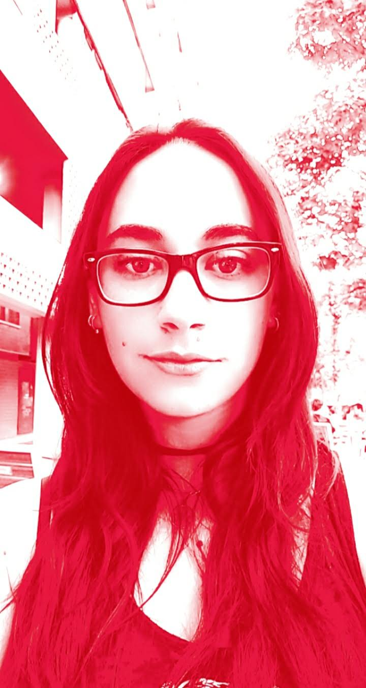

About Me
¡Hola, bienvenido a mi Portfolio!!
Soy Marta, Diseñadora UX / UI, Diseñadora Gráfica, Técnico en Diseño y Edición de Publicaciones Impresas y Multimedia, Técnico en Preimpresión Digital y Fotógrafa. Como diseñador UX/UI, me encanta encontrar soluciones a los problemas de los usuarios en el mundo digital y aprender qué necesitan. Me gusta el trabajo en equipo, creo que siempre se puede aprender de otras personas, intercambiar ideas, conocimientos y ver una perspectiva diferente.